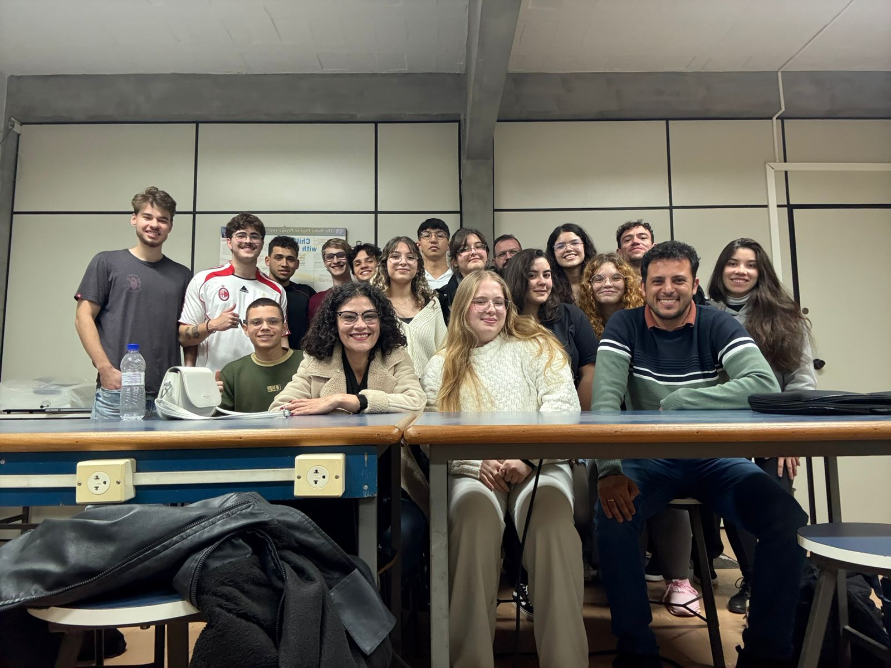

Welcome to GPEViM
Grupo de Propriedades Eletrônicas e Vibracionais em Materiais - GPEViM. Trabalha com caracterização de propriedades ópticas e térmicas de materiais além de produzir vidros teluretos. Também trabalha com simulação computacional.
Grupo de Propriedades Eletrônicas e Vibracionais em Materiais - GPEViM. Trabalha com caracterização de propriedades ópticas e térmicas de materiais além de produzir vidros teluretos. Também trabalha com simulação computacional.